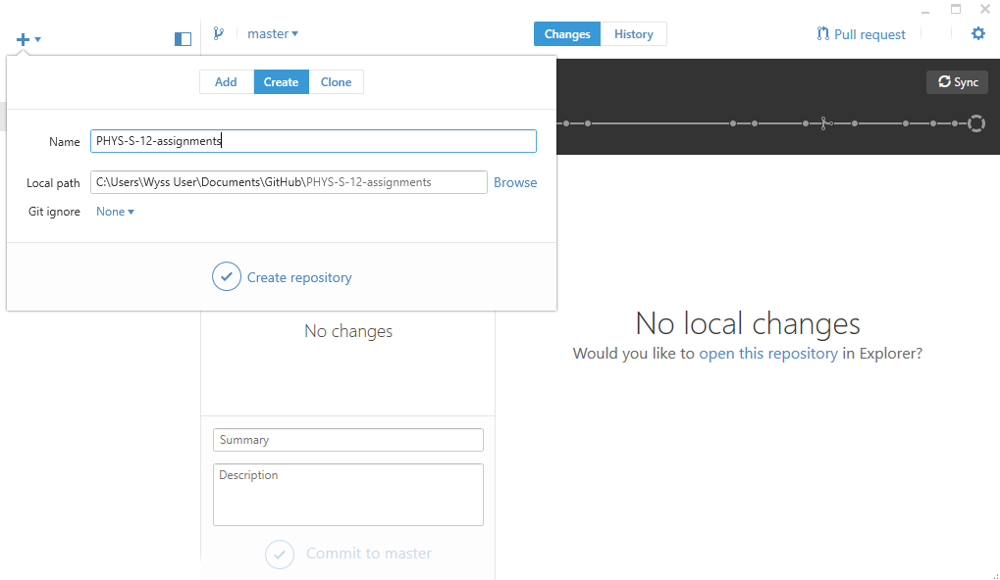
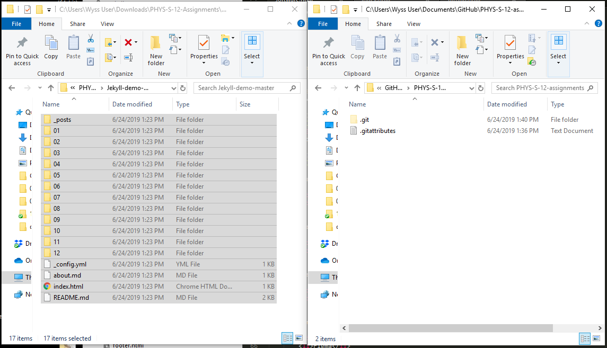
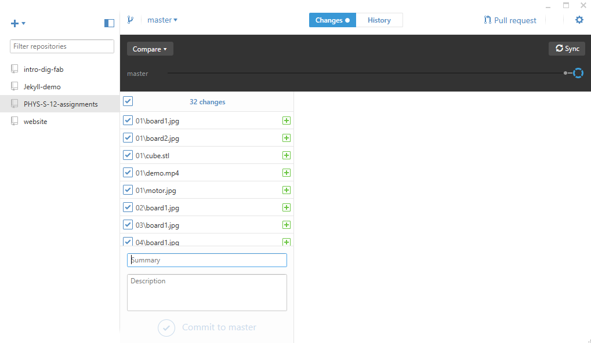
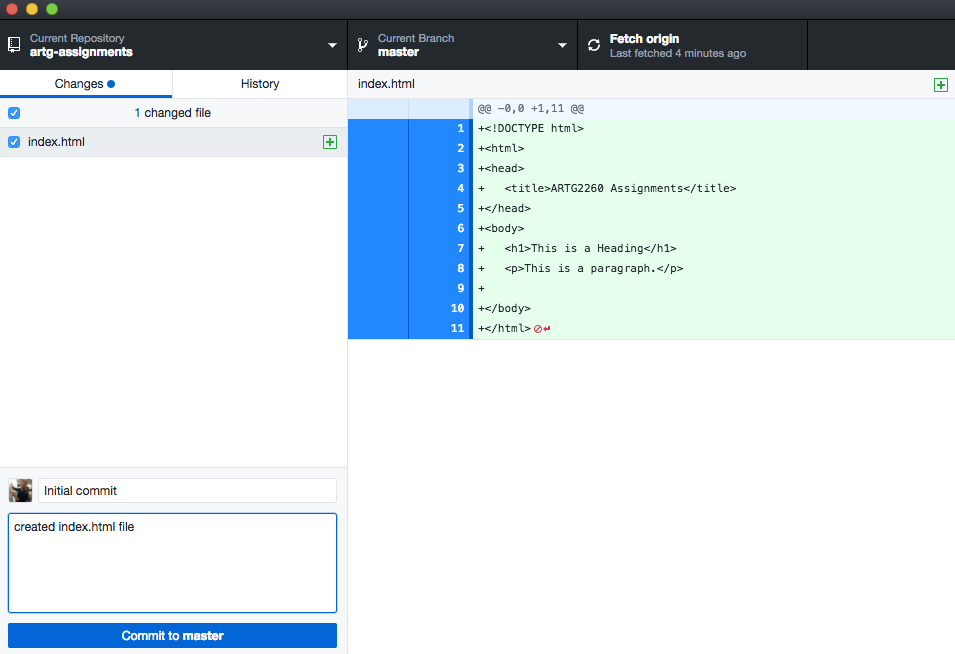

Exercise: Getting set up with GitHub
GitHub is the version control and collaborative network where the world goes tp write software. For the purposes of this class, we will use GitHub as a hosting service for our websites as well as version control (backup) for our code. We'll first make sure everyone is set up with GitHub, then we'll start writing HTML and CSS. By the end of class, we'll make sure that everyone is able to save and upload their websites. Daniel Shiffman has a great tutorial series on using Git and GitHub; the introduction video has an explanation of why GitHub is so useful.
Step 0: Download and Install Software
Step 1: Download Jekyll Template Repository
- Open GitHub Desktop. Click the + in the top left corner and clike "Create" to make a new repository. Name the directory something descriptive like "PHYS-S-12-Assignments" and make sure it's saving to the GitHub folder on your computer (for Windows usually "C:\Users\your-name\Documents\GitHub\"). Click "Create Repository".

- Click "Publish" and enter a description, like "Documentation for PHYS S-12, Introduction to Digital Fabrication". If you've signed into GitHub Desktop using your GitHub credentials, you should be able to publish this repository under your GitHub username. Click "Publish".
- Congrats, you've created your first GitHub repository! You can check the "remote origin" at https://github.com/your-username/PHYS-S-12-assignments. But there's nothing yet in the repo, so let's add our template content.
- Head to Jekyll-demo repository, click "Clone or download" and select "Download ZIP".
- Unzip/extract the file to your /Downloads folder or wherever else, and copy the entire extracted contents into your newly created empty repository.

- Back in GitHub Desktop, clicking the "Changes" tab should show you that a bunch of new files have shown up in your repo. Write a summary like "added files from template".

- Click "Commit to Master". This stores your changes locally. Next click "Sync" in the top right corner. This will push your changes to your remote repository (the version stored on GitHub's website).
- Check https://github.com/your-username/PHYS-S-12-assignments again, and you should see all of those files in the directory.
Step 2: Add Content to the Repository
Step 3: Save the Changes to the Remote Repository
- Now, go back to GitHub Desktop. You'll notice that the changes we made are reflected in the "Changes" tab. We ultimately want to "push" these changes to the online repository. But first, we need to "commit" those changes -- in other words, create a log of what we changed. This is a required step, and it's really useful when we're working collaboratively, or in case we ever need to go back to a particular commit. Give the commit a name and a description, and click "Commit to master".

- We've logged the changes, but we haven't yet published them to the master branch of the repository. This step is called "pushing". Click "Push to origin". This will update the working copy of the master branch of the repository with the changes you made. If you go to the repo home page (github.com/yourname/artg2260-assignments) you should see your newly created index.html file!
You have successfully synced your local directory with your remote repository. Anytime you work on your code, make sure to not only Ctrl+S to save often, but also periodically commit your changes and push them to your repository. Making changes to your website, committing and pushing them to your repo will also be the way in which you will turn in assignments.
Step 4: GitHub Pages
So far, we've created a repository and synced it to our local drive. We know that this directory is to be the source code for our website. So far it contains only an index.html file, which is pretty minimal (eventually, our repository should include a folder for each week, each with its own index.html file). However, the next step for now is to get our bare-bones website hosted on the web. For that, we can use a convenient service called GitHub Pages. Since we're using GitHub for version control anyway, it's straightforward to also use it as a hosting service. It will automatically update our website every time we push to our remote repo! (that saves a time-consuming step compared to other hosting platforms).
- Head over to GitHub Pages. Scroll down, and click "Project site", then "Start from scratch"
- We've already done Steps 1-3 (in a slightly different way). Jump ahead to Step 4, Repository Settings. Click on the Settings tab and scroll down to the GitHub Pages section. Then select the master branch source and click on the Save button.
- That's it! As instructed, fire up a browser and go to http://username.github.io/artg2260-assignments. Send your personal link to nathanmelenbrink at gmail dot com from a non-husky email address. I'll use that email address to invite you to the Google Group, which we'll use for communications during the semester.
That was a lot of steps, but this is a really important workflow! You'll need to go through this process at least once a week, so it will become routine. Over the semester, as we start to use more features of GitHub, it will start to make more sense why it's useful. Being comfortable with using GitHub is a prerequisite for most programming gigs.
Daniel Shiffman has created a tutorial video on using GitHub Pages for Hosting p5.js Sketches. He does some things a bit differently (it's no longer necessary to change to a gh-pages branch, we're using GitHub Desktop instead of Terminal and we're not yet working with p5.js) but it still may be useful to see someone going through the steps one more time.